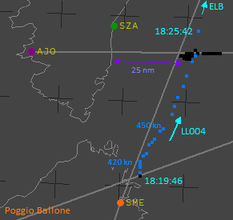
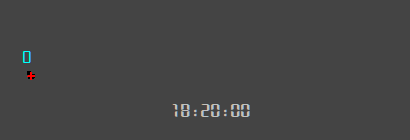
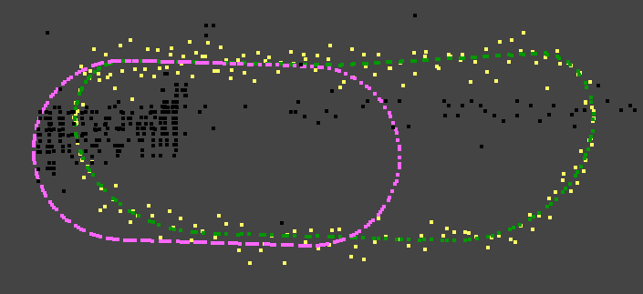
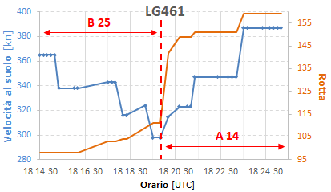

Presenza dell'AWACS
Luogo comune: nessun AWACS operava nei cieli italiani la sera della strage.
Motivazione: la presenza nella scena dell'AWACS farebbe parte di un depistaggio e di un complotto contro la NATO.
INDICE
Va subito precisato che non esiste alcuna evidenza oggettiva della presenza di un AWACS durante il volo dell'IH870. Tuttavia, esistono alcuni elementi che ne rendono la presenza molto probabile o quasi necessaria per giustificare ciò che accade.
Prima d'iniziare ad esaminare le evidenze che possono oggettivare la presenza di almeno un AWACS nel nord Italia, cominciamo da quelle che non possono oggettivarla.
Codici transponder di modo 3
In una vecchia revisione del sito (3-gen-2022), veniva presa in considerazione la possibilità che i codici 4200 e 5400 di modo 3 trasmessi da AA464/LL464 potessero indicare un aereo sotto vettoramento AWACS:
I codici che il TF-104G aveva impostato nel transponder (inizialmente 4200, per poi cambiare in 5400 a partire dall’avvicinamento iniziale a Grosseto) probabilmente stavano ad indicare che era vettorato da un AWACS che orbitava a distanza opportuna e tale da non dover necessariamente comparire su di uno schermo radar. Ciò si potrebbe ipotizzare (senza avere, però, alcuna certezza) consultando l'AIP del Regno Unito, sez. ENR 1.6, in cui si vede che alcuni codici (tra cui il 4200 e il 5400) vengono tutt’oggi usati per: "NATO Aircraft receiving a service from AEW aircraft" ed è possibile che tali codici venissero normalmente usati in ambito NATO, non solamente nel Regno Unito. L’AIP non è certo quello del 1980, ma forse alcuni codici del transponder sono rimasti invariati.
Brevissima parentesi in merito al TF-104G nominato nella vecchia versione della pagina che prendeva per buona l'assegnazione delle tracce LE011/AA464/LL464 fatta dai periti d'ufficio (il famoso "volo di addestramento di una coppia di F104 atterrati in sequenza a Grosseto"), assegnazione ormai chiaramente priva di fondamento (v. "I due F-104").
Il documento "WP000533_001.DOC" fonte consente di eliminare la possibilità che il codice 4200 di modo 3 potesse indicare (in Italia) un aereo sotto vettoramento AWACS, in quanto è chiaramente riportato che quel codice era a disposizione di Roma Radar.
Il significato del codice 5400 può essere appreso dal documento "WP000877_001.DOC" fonte che, a pag. 2, riporta: "5400 AVVICINAMENTO DI GROSSETO".
La posizione e il modo in cui LL464 cambia da 4200 a 5400 sono senz'altro compatibili con un codice assegnato da Grosseto Avvicinamento.
Un'ulteriore conferma sul codice 5400 viene dall'imputato di reato connesso Capitani Mario (controllore di Grosseto Avvicinamento), il quale riferisce (v. pag. 99):
IMP. R.C. CAPITANI MARIO: il... noi ci mettevamo in contatto con il radar di Poggio Ballone il quale ci dava il livello per l’autori... l’attraversamento dell’aerovia e, ehm... e ci dava il codice da inserire nel transponder, che sarebbe stato questo famoso squoc 364 o 354 e così via, poteva...
Quindi, anche lui conferma che i piloti militari venivano istruiti d'inserire 5400 nel modo 3.
In definitiva, nessuno di questi due codici (4200 e 5400 di modo 3) trasmessi da AA464/LL464 possono essere attribuiti a "NATO Aircraft receiving a service from AEW aircraft".
Presunto AWACS
Rimanendo nell'ambito delle evidenze che non possono oggettivare la presenza di un AWACS, vale la pena citare la traccia LL004 rilevata dal radar di Poggio Ballone.
In merito a tale traccia, in data 09.09.1996 il ten. col. Ciotti Claudio, che all'epoca della strage era ufficiale addetto presso il 1° R.O.C. di Monte Venda, viene sentito a
S.I.T. da personale della
D.C.P.P. su delega di Priore.
Ciotti riferisce di essere stato accompagnato da un suo collega presso l'ufficio di un generale che voleva un parere di un esperto per stabilire se una traccia riprodotta su di una cartina potesse rappresentare un AWACS. Il parere fu (v. "
WP002092_001.DOC"
fonte, fine pag. 1):
SI TRATTAVA DI UNA TRACCIA ORBITANTE SULLA CORSICA, LA MIA RISPOSTA FU CHE SE LA TRACCIA
RIMANEVA IN QUELLA POSIZIONE PER MOLTO TEMPO E AD ALTA QUOTA ERA CERTAMENTE UN AWACS.
Durante l'interrogatorio, Ciotti aggiunge (v. pag. 2):
A D.R.: LA CARTINA NELLA QUALE VIDI LA TRACCIA DEFINITA POI AWACS, NON ERA
INGIALLITA COME QUELLA CHE MI E' STATA MOSTRATA, NONOSTANTE CIO' CREDO DI POTER
RICONOSCERE IN QUELLA TRACCIA LL004 IL VELIVOLO AWACS. PRENDO ATTO CHE NELLA
TRACK HISTORY DI POGGIO BALLONE IL DATO DI QUOTA NON COMPARE MAI IN
CORRISPONDENZA DELLA TRACCIA LL004; TUTTAVIA SONO CERTO CHE DURANTE QUEL
COLLOQUIO SI PARLO' ANCHE DEL DATO DI QUOTA AI FINI DELLA IDENTIFICAZIONE DEL
VELIVOLO COME AWACS.
Questa traccia inizia ad essere nominata a pag. 294 del "
TITOLO 2 - L’istruttoria dal 27 luglio 90 al 31 dicembre 97." dell'
Ordinanza di rinvio a giudizio - Sentenza istruttoria di proscioglimento, dove il G.I. Priore parla di traffico operativo (aerei militari che volano al di fuori delle aerovie) ad ovest di Ponza:
Anche il Nadge presso il CRAM di Poggio Ballone, rileva il
fenomeno [il traffico operativo, ndr]
e gli operatori compiono delle azioni sullo stesso. Di fatto, sino alle ore 18.32 Poggio Ballone segue un velivolo civile (LL004) e, quando lo
stesso incrocia la serie di plots vista da Ciampino, gli operatori si
disinteressano del velivolo civile con SIF3=4213
e posizionano la Ball-Tab sul citato sciame di plots, preoccupandosi di reinizializzare la traccia tutte le volte che scade di qualità.
In realtà, l'aereo ha impostato nel transponder il codice 4216 (nel tabulato di Poggio Ballone non è presente nemmeno un plot con il codice 4213), codice confermato anche dai quattro tabulati dei radar di Roma.

La cartina mostra proprio ciò che descrive Priore. Si vede, infatti, che LL004 viene tracciato fino a quando non incrocia lo sciame di plot; dopodiché compare un solo plot e la traccia viene "agganciata" ai plot di solo primario (plot neri), abbandonando il tracciamento dell'aereo (rilevato fino a Firenze dai radar di Roma).
Il tabulato di Poggio Ballone non riporta mai la quota di questo aereo, ma i due radar secondari di Roma ricevono il dato trasmesso dal modo C del transponder:
livello di volo 239 (quella sera corrispondente a poco meno di 25000 ft sul livello del mare). Questa quota è quella tenuta dall'aereo rappresentato dai plot blu, non si riferisce ai plot neri, la cui quota è sconosciuta.
La velocità rilevata da Poggio Ballone è inizialmente circa 420 kn, poi aumenta e si stabilizza intorno ai 450 kn.
Soltanto per alcuni dei plot neri viene rilevata la velocità e questa risulta intorno ai 20 kn, tranne che per un plot rilevato a 448 kn, ma questa velocità è chiaramente relativa all'aereo, non ai plot neri.
La velocità dello sciame di plot può essere calcolata in modo sufficientemente accurato sfruttando i due radar primari di Roma, come mostrato dalla seguente animazione.

Qui vediamo i plot ricavati dall'insieme dei quattro estrattori di Roma (riportati come LL004 da Poggio Ballone) per una finestra temporale di 2 minuti.
Lo spazio mostrato si estende per circa 25 km in latitudine e 75 km in longitudine. La crocetta rossa rappresenta la posizione media di tutti i plot presenti all'interno della finestra di 2 minuti.
La velocità media viene calcolata considerando lo spazio percorso dalla crocetta ogni 2 minuti ed è visualizzata in nodi.
Sembra evidente che la traccia LL004 non può essere associata in alcun modo ad un AWACS, tanto che Ciotti, interrogato da Priore il 24.09.1996, attribuisce alla traccia una natura ben diversa da quella attribuitale un paio di settimane prima (v. "
WP001103_001.DOC"
fonte a fine pag. 1):
POTREBBE TRATTARSI DI UN UCCELLO OVVERO DI UNO STORMO DI UCCELLI, O DI UNA NUVOLA. E' AVVENUTO CHE IL SINTETICO SI 'E AGGANCIATO A UN VELIVOLO CON SIF CHE
PROCEDE A OLTRE 450 NODI; POI SE NE E' DISTACCATO E S'E' AGGANCIATO A UNA SORTA DI "PORCHERIA".
Considerando che la velocità è calcolata rispetto al suolo (e non rispetto all'aria), potrebbe essere teoricamente possibile che un enorme stormo d'uccelli in volo a quota molto elevata o una grossa nube temporalesca (in grado di riflettere il segnale dei radar) avessero potuto essere sospinti verso est dal forte vento in quota, ma il fatto che i plot si spostano inizialmente verso ovest rende inaccettabile l'ipotesi della nuvola.
L'ipotesi dello stormo d'uccelli sembrerebbe meno incompatibile, ma si dovrebbe accettare anche l'ipotesi che lo stormo sale fino a circa 10 km di quota, dove il vento aveva una velocità di circa 100 kn, altrimenti non si spiegherebbe la velocità dei plot di oltre 130 kn.
Qualunque cosa rappresenti quello sciame di plot, ciò che interessa evidenziare in questo contesto è che sicuramente non era un AWACS.

Infatti, in questa immagine si vede un tipico circuito "a biscotto" usato per stazionare in un determinato punto o zona.
Lo spazio mostrato si estende per circa 26 km in latitudine e 80 km in longitudine.
Il circuito ideale (quello che si vorrebbe volare) è rappresentato dai punti viola ed è un circuito con virate a sinistra.
L'esempio simula un E-3 Sentry che vola a 30000 ft con una velocità di 310 kn o mach 0,52. I dati usati per questo esempio sono tratti da
GlobalSecurity.org e "
AWACS: NATO’s 'eyes in the sky'".
I punti verdi mostrano il percorso realmente seguito dall'E-3 a causa del forte vento da ovest, mentre i punti gialli simulano i plot ricevuti dal radar Marconi affetti dall'errore in azimut e in distanza.
È palese la differenza tra la disposizione dei plot neri (il presunto AWACS) e quella dei plot gialli. Quindi, anche grazie a questo esempio, è evidente l'impossibilità che LL004 possa rappresentare un AWACS.
Infine, ecco un'animazione che mostra LL004 (plot neri) e una simulazione di un ipotetico AWACS orbitante nella zona di LL004 ricevuto dal Marconi (plot gialli).
Lo spazio mostrato si estende anche in questo caso per circa 26 km in latitudine e 80 km in longitudine.
Insomma, non c'è alcun dubbio che LL004 non ha niente a che vedere con un AWACS.
Tracce tra Bologna e Firenze
La seguente animazione (molto velocizzata) mostra il traffico presente nel tabulato di Poggio Ballone scaricato da STRAGI80.it. L'orario è "risincronizzato" con quello di Ciampino (v.
"Volo in A-14 → Sfasamento temporale tra Ciampino e Poggio Ballone").

Tra le varie tracce, due sono di particolare interesse per l'argomento qui trattato:
| N | Colore | NTN | SIF1 | SIF3 | Quota | GS |
| 1 | Viola | LE200/LG113 | 01 | 1020 | 25499 | 290 |
| 2 | Arancione | LE207/LG521/LE206 | 10 | 1022 | 10875 | 230 |
Entrambi gli aerei sono sicuramente militari (per la risposta del transponder di modo 1) e volano lungo l'aerovia G-7 verso est.
Inizialmente, quello viola precede l'altro di una trentina di miglia (circa 50 km), sono, cioè, separati di circa 8 minuti, ma data l'estrema variabilità della velocità riportata sui tabulati, si può ritenere che la reale separazione possa essere di circa 10 minuti, proprio come per il traffico civile. Risulta, quindi, che i due aerei si comportano come un normale traffico non operativo (sebbene militare), almeno inizialmente. Poi, nei pressi di Bologna, l'aereo viola inizia il volo fuori dalle aerovie civili, dirigendosi verso il TACAN di Cervia. Sebbene la quota riportata nel tabulato resti costante, la qualità del segnale passa da 7 (il massimo) a 5, 2, 1 e infine scompare; sembrerebbe atterrare a Cervia.
L'altro aereo si trova inizialmente al
minimo livello d'aerovia (FL 110, vola, cioè, alla quota più bassa autorizzabile per quel tratto d'aerovia), continua il volo in aerovia, comparendo a nord dell'NDB di Ferrara, lungo la A-12 verso Vicenza (non presente nell'animazione), virando, infine, a nord-est verso il TACAN di Aviano ad una quota di 8625 ft e velocità molto bassa (180/190 kn), per cui sembrerebbe che debba atterrare ad Aviano o, più probabilmente, ad Istrana (data la maggiore vicinanza ai plot).
Proviene da Genova, in direzione Firenze, a velocità moderata (330/350 kn), anche la "misteriosa" traccia LG461 (plot neri) che non trasmette alcun codice col transponder. La quota è quasi certamente inferiore ai 25000 ft, dato che i radar di Roma Controllo non lo rilevano (mentre rilevano il Fokker 28 del volo Itavia IH779 al livello di volo 250).
Anche LG461 vola in aerovia (la B-25). A 5 nm dal VORTAC di Firenze, s'immette nella A-14 mantenendo, almeno inizialmente, le 5 nm dall'asse dell'aerovia, volando proprio al limite ovest di questa (comportamento molto strano).
Per cercare di chiarire i codici di modo 1, tornano utili alcuni interrogatori.
L'imputato di reato connesso Lauretani (ascoltato più come consulente che come imputato) riferisce (v. pag. 81 della trascrizione): "un velivolo, io presumo dalla mia esperienza, cioè non ho nessun dato di fatto, un velivolo AWACS, è un velivolo di sorveglianza aerea militare, normalmente accende tutti i codici, altrimenti viene scambiato per un velivolo sconosciuto, cioè i codici militari di quel velivolo vengono evidenziati nel modo uno.".
Del Zoppo, guida caccia a Marsala all'epoca dei fatti, dichiara
fonte
davanti al giudice Priore che i SIF1 pari a 1, 10 e 20 vengono assegnati a "UK STRIKE COMMAND".
Due mesi prima (a maggio '95), egli aveva dichiarato: "il SIF 1 - 10 è riconducibile a velivoli da ricognizione, probabilmente potrebbe anche indicare l'AWACS, [...]" (v. verbale
fonte
verso la fine di pag. 3).
Il 19 maggio, fornendo ulteriori dettagli (molti ed interessanti) sull'utilizzo del transponder, dichiarava: "il 10 per l'AWACS recentemente, ma potrebbe esserlo stato anche nell'80." (v.
verbale
fonte a metà pag. 2); cioè, nei primi anni '90, il SIF1 = 10 indicava un AWACS, ma forse lo indicava anche nell'80. Come potrebbe essere diversamente? Dopotutto, il significato del modo 1 è quasi per nulla soggetto a modifiche nel corso degli anni, contrariamente a quanto accade per l'assegnazione del modo 2 (che varia in base all'aereo, al pilota e alla base d'appartenenza) e del modo 3/A (che variava ogni qualche anno a causa della crescita del traffico civile).
Da questa trascrizione di un esame dei periti del collegio Dalle Mese, risulta che il consulente Bonazzi, leggendo un documento prodotto dal collegio Dalle Mese, riferisce (v. pag. 199): "nel 1980 gli I.F.F.1 uguale 10 designava l’A.W.A.C.S.".
Poco dopo, durante l'esame, il perito Donali afferma (v. pag. 201): "da quello che ricordo c’è stato riferito dagli esperti N.A.T.O. che i codici S.I.F. identificavano un A.W.A.C.S.,".
Ulteriori affermazioni vengono fatte a partire dall'ultima riga di pag. 203, quando il perito Dalle Mese legge una parte della loro perizia. In particolare (v. pag. 204):
[...] sull’Appennino tosco romagnolo stazionano
A.W.A.C.S. e tracce Lima/Golf521, Lima/Echo206,
Lima/Echo207 con S.I.F.1 uguale 10, S.I.F.2
uguale 1000, S.I.F.3 1022, e 4300, vedi figura 4,
che il predetto velivolo sia un A.W.A.C.S. è confermato dalle testimonianze Del Zoppo e De
Giuseppe agli atti, e dall’annotazione dell’I.C.
sul registro di Poggio Ballone, Caporale De
Giuseppe, intercettazione A.W.A.C.S., annotazione
che lo stesso De Giuseppe traduce e ricordo con
precisione che la dizione intercettazione
A.W.A.C.S. voleva dire che quella missione
sarebbe stata a disposizione dell’A.W.A.C.S.,
quale fosse la missione a disposizione
dell’A.W.A.C.S. non è stato scoperto.
In merito al significato di "stazionano" (v. pag. 205):
CONSULENTE BONAZZI FRANCO: ho una domanda, un’altra domanda, cosa intendete o cosa intendevate per stazionare?
PERITO DALLE MESE ENZO: si intendeva dire un volo lento.
Insomma, ciò che se ne può dedurre è che entrambe le tracce potrebbero rappresentare un AWACS per i codici SIF1 e quella arancione, quasi certamente lo era.
Per ciò che riguarda quota e velocità, entrambe le tracce sono certamente compatibili con un AWACS E-2C che, in questo caso, deve limitarsi a fornire solo pochi minuti d'assistenza ai due/tre aerei che confluiscono nel VORTAC di Firenze. Si veda anche E-2C/E-2C+ AIRCRAFT DESCRIPTION per ulteriori caratteristiche dell'aereo.
Il fatto di non percorrere il caratteristico circuito "a biscotto", solitamente descritto da un AWACS operativo, è utile per non destare sospetti e non implica che un AWACS non possa fornire assistenza per una decina di minuti. Tra l'altro, la velocità particolarmente bassa favorisce una maggiore permanenza in zona.
Sequenza delle azioni compiute
Al fine di oggettivare maggiormente la particolarità delle azioni compiute dai vari aerei (in particolare quelle compiute dai due possibili AWACS) in relazione alla presenza degli altri, vediamo dettagliatamente cosa accade.
Tutti i dati che seguono (velocità, rotte e distanze) sono letti direttamente dal tabulato di Poggio Ballone, senza alcun tipo di analisi aggiuntiva. Si tenga solo presente che l'orario, come già detto, è "risincronizzato" con quello dei tabulati di Ciampino.

Prima d’intercettare la rotta formata dai due radiofari VIL e BOA, LE011 (verde) sta accelerando e continua a farlo fino a raggiungere 487 kn (si tenga presente che le velocità rilevate dai radar sono sempre riferite al suolo).
La particolarità della rotta seguita da questo aereo è ampiamente spiegata nella pagina "
Presenza del MiG-23" → "Traccia LE011".
Considerando che il tabulato di Poggio Ballone elenca tutti i plot presenti nell'immagine come remoti (cioè non rilevati da Poggio Ballone, ma da un altro sito radar della catena NADGE) e che LE è l'identificativo radar di Poggio Renatico, situato a poche decine di chilometri da LE011, è lecito ipotizzare che la quota di volo fosse bassissima, data la scarsità di plot presenti, almeno fino alle 18:17:20 (terzo plot per distanza da Bologna).
Ad una decina di miglia da BOA inizia a rallentare; sono le 18:18.
In questo momento, l’aereo viola transita esattamente a sud di Bologna a 15/20 nm da LE011, mentre l’aereo arancione è ad ovest di Bologna a 20/25 nm da LE011.

I radar di Mortara e Poggio Renatico fanno buon uso dei quotametri per rilevare la quota dei due aerei (arancione e viola), mentre non sono interessati alla quota di LE011 che continua a rallentare fino a 419 kn, quando si trova circa 10 nm a sud di Bologna, alle 18:20:30.
Nel frattempo, anche l’aereo viola (LE200) ha rallentato, scendendo a 269 kn alle 18:19:53.
Alle 18:20:40, l'aereo arancione (in quel momento riportato come LG521) inizia a trasmettere con SIF2 = 1000 per 24 s (due giri d'antenna).
Poi LE011 ricomincia ad accelerare e alle 18:20:50 lo troviamo a 449 kn.
Alle 18:21 circa, l’IH870 è nei pressi di Firenze (v. "
WP000172_001.DOC"
fonte).

LG461 (plot neri nei pressi di "FRZ") appare interessato all'IH870, come sembrerebbe dimostrare questo grafico, i cui dati sono letti nel tabulato di Poggio Ballone e l'orario è (come al solito) sincronizzato con quello dei tabulati di Ciampino (v. "
Volo in A-14 → Sfasamento temporale tra Ciampino e Poggio Ballone").
La parte sinistra del grafico mostra la rotta e la velocità durante il volo lungo la B-25 (Genova - Firenze), mentre la parte destra le mostra per il volo in A-14 (Firenze - Bolsena).
Sappiamo dalle comunicazioni
T/B/T che alle 18:20 l'IH870 sta sorvolando la radioassistenza di Firenze (v. "
Comunicazioni T/B/T → Ingresso in A-14"). Proprio in questo momento, LG461 vira a destra senza nemmeno attendere di avvicinarsi ancora un po' al VORTAC "FRZ", come se dovesse per forza affiancarsi al DC-9.
Il grafico mostra che LG461 rallenta gradualmente, fino a quando non entra in A-14, poi ricomincia ad accelerare, come se dovesse raggiungere il DC-9 (ciò che in effetti accade circa 3 minuti dopo).
Siccome alle 18:20, la distanza tra LG461 e il DC-9 è circa 8 km, il primo vede sicuramente le luci del secondo e può manovrare di conseguenza per raggiungerlo, ma questo non può avvenire 5 minuti prima, quando LG461 si trova ad una settantina di chilometri dal DC-9 ed inizia gradualmente a ridurre la velocità per arrivare puntuale all'appuntamento con l'IH870; deve obbligatoriamente esserci qualcuno che gli comunica la distanza dal "bersaglio" e nessuno può farlo meglio di un AWACS che vola in sincrono con LG461 ad una quarantina di chilometri ed in aerovia (v. l'aereo arancione dell'animazione), facendo finta di niente.

Alle 18:21:04, ecco che compare AA464 (color ciano) a circa un paio di miglia da LE011 a ben 535 kn. LE011 ha una rotta di 185°, mentre AA464 di 195°, quindi quest’ultimo sta raggiungendo LE011 e sta convergendo verso di lui.
AA464 sta rispondendo ai radar secondari della difesa aerea sia al modo 1 con 00 che al modo 3 con 4200, mentre ha il modo 2 inibito.
L’aereo viola si trova a 20 nm dalla coppia e l’arancione a circa 16 nm. Entrambi stanno acquistando velocità, come ad indicare che se avevano qualcosa a che fare con l’entrata in formazione di AA464 e LE011, ormai lo hanno fatto.
Contemporaneamente all’aumento della velocità, sia LG521 (l’aereo arancione) che LE200 (quello viola) inibiscono le risposte del transponder al modo 1, continuando a rispondere solo al modo 3.
Alle 18:21:28, AA464 attiva anche il SIF di modo 2, rispondendo con 7777 e riduce la velocità, ma comunque è ancora una settantina di nodi più veloce di LE011, anche se ormai sono quasi attaccati (un paio di miglia), per arrivare al punto in cui il radar non riesce più a separarli.
Alle 18:21:29, AA464 compare anche sullo schermo del radar Marconi di Ciampino (non del Selenia), con il codice 4200.
Riepilogando brevemente, una volta che AA464 entra in formazione con LE011, i due aerei (arancione e viola) accelerano e disabilitano le risposte di modo 1 (che indica il tipo di missione), come per dire: "Missione compiuta! Andiamocene velocemente per la nostra strada.". È molto difficile pensare che questi due aerei non avessero nulla a che fare con gli altri. Risulta fin troppo evidente che il comportamento di questi due aerei è condizionato da ciò che fanno AA464 e LE011.

Alle 18:22:17 ricompare AA464 con velocità identica a quella di LE011: 453 kn. Inoltre il transponder, momentaneamente non sta rispondendo al modo 1.
Dopo 21 s, AA464 "flasha" con SIF1 = 73, ciò fa comparire l’aereo sugli schermi radar della D.A. con un simbolo ben evidente e luminoso (nulla cambia sugli schermi del T.A. di Ciampino).
Quindi AA464 ha azionato l'interruttore per inibire le risposte di modo 1, ha ruotato le due manopole del modo 1 da 00 a 73 (da un fine corsa all’altro) e ha ripristinato la risposta di modo 1, quindi non c’è dubbio che la risposta 73 è intenzionale e non è un errore di sistema (come capita di leggere nei verbali delle testimonianze rese da alcuni radaristi della D.A.).
Questo "flash"
potrebbe indicare l'accadimento di un particolare evento pianificato e noto ai vari soggetti coinvolti in questa "strana" operazione, evitando di usare la radio per comunicarlo, con il rischio di coinvolgere una platea potenzialmente ampia.
Alle 18:22:26, infine, l'aereo arancione ripete la trasmissione del codice 1000 con il modo 2, anche stavolta per due giri d'antenna.
In merito alla famosa bufala dell'"allarme generale", che secondo i creativi di Ustica sarebbe indicato da qualche plot con SIF1 = 73 nel tabulato radar di Poggio Ballone, si rimanda al paragrafo "RADAR e SIF → Codice 73 del SIF di modo 1".
Il "ritardo ATC"
Tra i tanti fatti che devono essere presi attentamente in considerazione, c'è anche quello in cui l'IH870 si trova fra tutti quegli aerei in transito tra Bologna e Firenze solamente a causa del "ritardo ATC" di circa 20 minuti comunicatogli quando il DC-9 aveva già terminato l'imbarco dei passeggeri ed era pronto a partire (v. "Comunicazioni T/B/T" → "Svolgimento del volo").
Siccome l'unico aereo che transita tra Bologna e Ferrara (la rotta usata dall'IH870 dopo il decollo) sta volando ad oltre 34000 ft verso nord (identificato nel tabulato di Poggio Ballone con LE130), quindi del tutto ininfluente per un aereo che decolla da Bologna, l'IH870 avrebbe potuto essere autorizzato alla messa in moto già qualche minuto dopo dell'IH803 (autorizzato alle 19:45B o 17:45), cioè circa alle 17:50/17:55, anziché aspettare inutilmente le 18:00.
Questo ritardo (inspiegabile solo ad una lettura superficiale degli eventi) ha avuto come risultato più evidente quello di far trovare l'IH779 tra i piedi dell'IH870, bloccandogli la salita per oltre 20 minuti. In aggiunta (ed è la cosa più importante), a causa di questo ritardo, il DC-9 si è ritrovato circondato da almeno i seguenti aerei (quelli presenti nei tabulati radar):
- IH779 (Fokker 28 Itavia);
- LG461 (aereo Genova - Firenze);
- LE011 (caccia che sembra decollare da Villafranca);
- AA464 (caccia che vola in parallelo all'A-14);
- LE200 (aereo militare Bologna - Cervia);
- LE207 (AWACS secondo il collegio peritale Dalle Mese);
di cui i primi quattro si sono riversati nell'A-14 o la hanno attraversata entro 2 o 3 minuti dal passaggio dell'IH870.
A meno che non si voglia ridurre tutto ciò a puro fatalismo, affermando che sta succedendo tutto per puro caso, è evidente che il decollo dell'IH870 è stato sincronizzato con il passaggio di almeno altri sei aerei transitati in zona o confluiti nell'A-14.
Conclusione
Delle due tracce LE200 e LE207, certamente militari, la seconda rappresenta quasi certamente un AWACS per il SIF1 = 10. Anche la particolarissima sequenza di azioni messe in atto dai vari aerei (utilizzo del transponder, comportamento del caccia AA464 e di LG461 e variazioni di velocità) consente di formulare solide ipotesi sull'effettiva correlazione tra ciò che fa un aereo in relazione agli altri, tanto da risultare evidente che AA464 e LG461 sono quasi certamente guidati da LE200 o LE207.